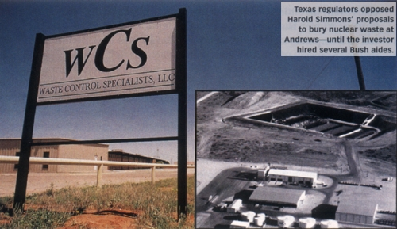

By Peter Klebnikov, for
Mother Jones Magazine, July/August 2001 Issue
© 2001 Foundation for National Progress

The Texas Solution
The federal government is facing a glut of radioactive waste
and a
contract to bury some of it could be worth millions to one of
George W.
Bush's top fundraisers.
There are no statues in the courthouse square of Andrews, Texas, only a
squat metal monument commemorating the one-billionth barrel of oil pumped
out of the sand. The "straightest road in Texas" leads out of town, past an
abandoned gas station and a dessicated forest of scrub oaks.
If you go far enough into the alkali desert, you'll reach a huge
hole in the sand. This is where, if one of President Bush's premier
Texas fundraisers has his way, the federal government could soon bury a
substantial share of the radioactive waste accumulated in 50 years of
nuclear weapons production.
The site's owner is Dallas billionaire Harold Simmons, whose corporate
empire embraces everything from sugar refineries to the controversial
chemical manufacturing firm NL Industries. One of his less successful
ventures is Waste Control Specialists, a hazardous-waste disposal
company that has been dogged by fires, radioactive spills, and
persistent financial losses.
Simmons bought Waste Control in 1995 and soon launched a plan to revive
the fortunes of the 16,000-acre desert site. He began reaching for the
waste industry's biggest plum--a contract with the federal Department of
Energy (DOE) to dispose of low-level nuclear waste, primarily
radioactive soil, equipment, and building debris from military
facilities.
There were a few impediments: Critics warned that the Andrews site,
which sits atop the nation's largest aquifer and abuts an earthquake
fault, was ill suited for radioactive material. And Texas regulators
opposed Simmons' plan, fearing a loss of control over what was buried in
their backyard. But over the years, Simmons--with support from his
onetime Dallas neighbor, then-Governor Bush--has managed to neutralize
most of the objections. Now, with his allies controlling the nation's
energy policy, he may finally be poised to win a federal contract that
could be worth hundreds of millions of dollars.
Simmons, and a series of PACs he controls, contributed about $160,000 to
Bush's Texas gubernatorial campaigns in the 1990s, and more than
$550,000 to Republican soft-money accounts and Bush's presidential
campaign in the last election cycle. Simmons also has been a significant
donor to the Senate campaigns of Energy Secretary Spencer Abraham, and
Bush's Interior Secretary, Gale Norton, once worked for him as a
lobbyist. "Harold feels very comfortable with the people now in
Washington," says Paul Bass, a Dallas businessman and close friend of
Simmons. (Simmons declined to be interviewed for this article.)
People close to Simmons are tight-lipped about his relationship with
Bush. "They are friendly, but not friends" is all one former employee
will say. "Simmons has no influence on Bush." Still, during Bush's
governorship, his state agencies made several decisions that vastly
improved Simmons' business prospects.
In 1996, after the Texas Natural Resources Conservation Commission
announced that it opposed any private disposal of out-of-state nuclear
waste in Texas, Bush's chief lobbyist in Washington, Roy Coffee, met
with the commission's director. The following week, the agency reversed
its stance. And in 1997, Simmons hired several former Bush aides as
lobbyists; not long afterward, the Texas Bureau of Radiation
Control--which had previously found Waste Control's nuclear storage
application "severely deficient"--granted the firm a license to bury
waste from power companies and some federal agencies.
As governor, Bush supported state efforts to build a nuclear waste site
at Sierra Blanca in western Texas, but vowed to keep the state from
becoming a nuclear "dumping ground." Now he must supervise the DOE's
efforts to rid itself of 357 million cubic feet of low-level waste; the
administration also wants utilities to build more nuclear plants, even
though it lacks disposal sites for the waste from existing plants.
Simmons began asking the federal government for a waste-disposal
contract in 1996, but the Clinton administration refused to do business
with Waste Control and successfully fought off a lawsuit from the
company. "Our main concern was, Was Waste Control a fly-by-night
company?" says a senior DOE official. "They didn't have a track record."
The department's stance soon attracted the attention of Simmons' allies.
Numerous members of Congress urged then--Energy Secretary Federico Pena
to accept the Waste Control proposal. Senators Phil Gramm (R-Texas), Kay
Bailey Hutchison (R-Texas), and Richard Shelby (R-Ala.), all of whom had
received major contributions from Simmons, held up the appointment of a
DOE general counsel who had opposed the application.
"Waste Control played hardball," says L.G. Holstein, chief of staff
under Pena. "It's highly unusual for a company to inject itself into the
confirmation process of a nominee like that. They put a lot of pressure
on us."
Now, with Bush in power, strong-arm tactics may no longer be required. A
recent DOE report recommended hiring private contractors to dispose of
some 35 million cubic feet of the department's low-level waste, and
officials say they are reviewing potential partners. Back in Texas, the
state Senate recently passed a bill that would grant Waste Control a
20-year license to bury low-level DOE waste at Andrews. Leading the
charge for Simmons' plan were Republican state Senators J.E. "Buster"
Brown and Teel Bivins, both close Bush allies and recipients of
substantial campaign contributions from Simmons.
"The arrogance of the Simmons people is amazing, even by the standards
of Texas, where big business gets what it wants," says Erin Rogers,
outreach coordinator of the Texas Sierra Club . "The entire Texas
political establishment is helping this one company."
Friends describe the 71-year-old Simmons as polite, if reclusive. They
speak in awe of a country boy who grew up in a shack without plumbing
and electricity, began working as a soda jerk, and became a billionaire.
"He's a clairvoyant investor," says Bass. Simmons' business acumen has
manifested itself in a career as a corporate takeover artist with
holdings in the metals, chemicals, oil, sugar, and real estate
businesses--all industries that depend heavily on the goodwill of
politicians and the laws they create. "That's why I participate in the
political process," Simmons told the Dallas Morning News in 1997.
In 1993, Simmons' unorthodox giving practices earned him the nation's
highest Federal Elections Commission fine for violating contribution
limits. Four years later, he settled a lawsuit brought by his daughters,
admitting that he had siphoned $110,000 from their trust funds for
political donations. His family, he remarked at the time, "apparently
doesn't understand the value of political activity."
Simmons' businesses have also been the focus of high-profile court
challenges. NL Industries, once one of the nation's top manufacturers of
lead paint additives, is the subject of 75 lawsuits charging that its
products and factories had poisoned residents and workers in at least
eight cities. And last year, five former employees of the DOE's Gaseous
Diffusion Plant in Paducah, Kentucky, filed a series of class-action
suits against NL, claiming that the company had knowingly shipped 22.5
tons of plutonium-saturated ash without telling workers that the waste
exceeded federal safety standards by as much as 700 times.
In Andrews--a mostly Hispanic community impoverished by years of drought
and falling oil prices--politicians have characterized Simmons' plan as
an economic development project. The Waste Control site, notes company
spokesman Tony Profitt, "has been endorsed by county officials at every
level." But some residents question whether a businessman with Simmons'
record should be trusted with radioactive waste. Just last year, Waste
Control suffered two hazardous chemical fires; the year before, a pile
of cesium spilled out of a container on a truck.
Outside town, Bill Addington, a farmer who heads the Sierra Blanca Legal
Defense Fund, surveys the pits Waste Control has dug in anticipation of
a federal contract. Under the current plan, the firm's nuclear waste
disposal license would expire in 20 years, with the state and federal
governments responsible for the waste for centuries thereafter. "What a
gift for President Bush to leave his home state," Addington says.
Visit Mother Jones on the web